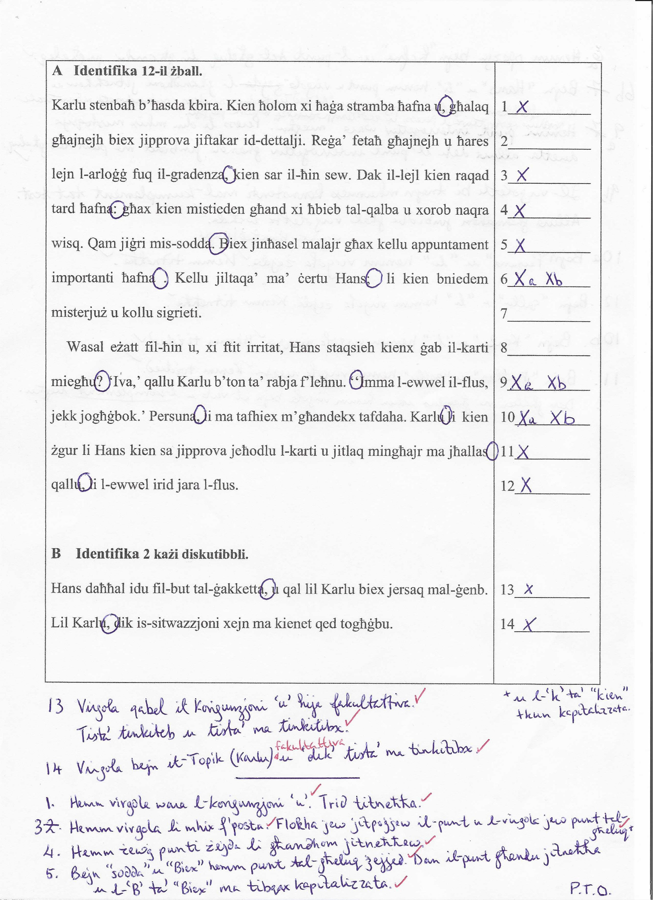
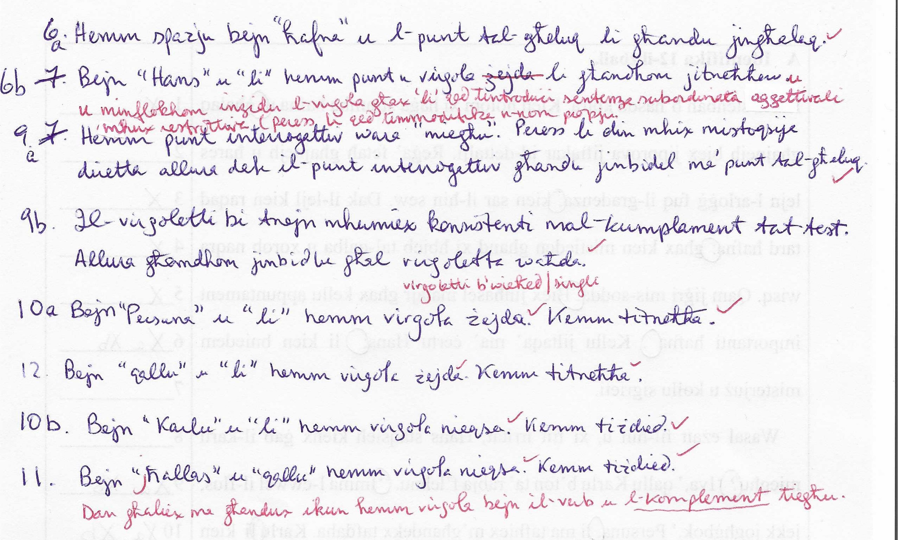
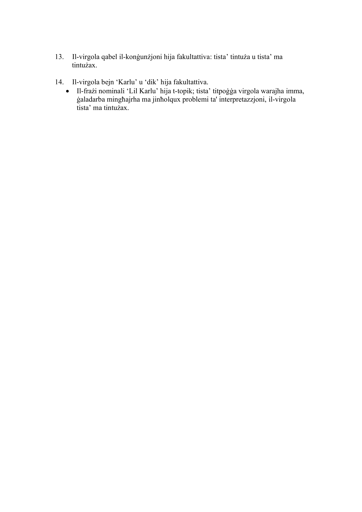
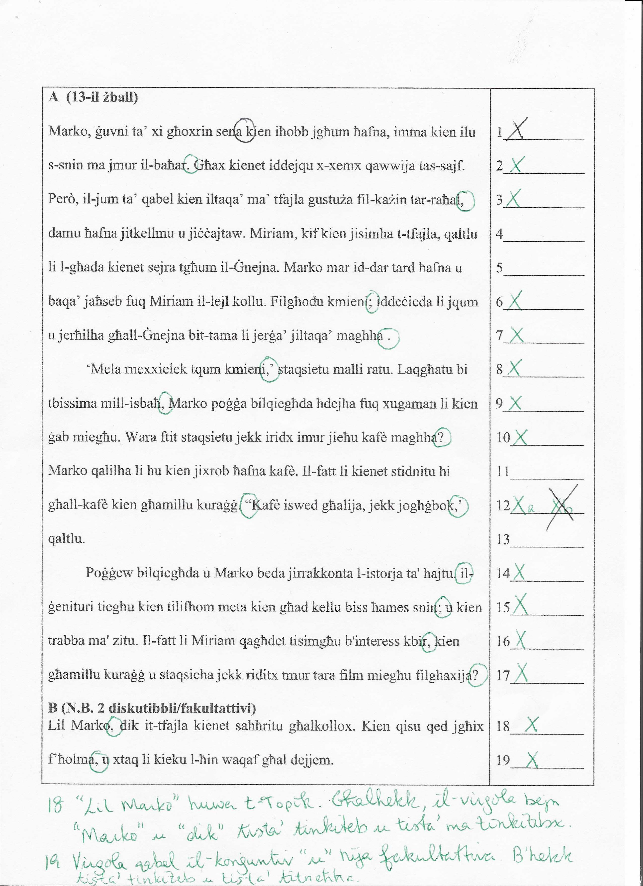
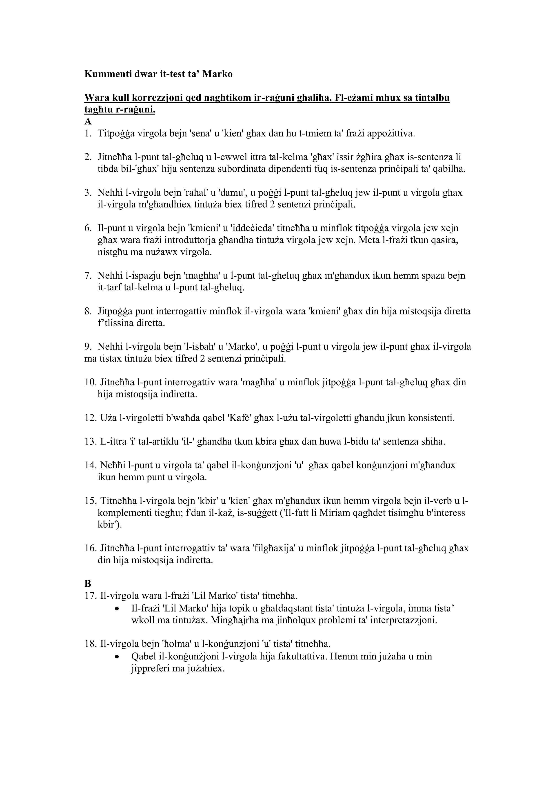

Il-ħanut ta’ Turu kien mimli bin-nies; kulħadd irid jinqeda kemm jista’ jkun malajr. Ħdejn il-friża kien hemm mara żagħżugħa,.2 iIl-mara kienet liebsa ġakketta sewda bil-buttuni tal-fidda, qalziet isfar jgħajjat, u żarbun bit-takkuna għolja xi tliet pulzieri. Għajnejha,4 kienu suwed tuta. Kien jisimha Marga:5 u kienet persuna tassew stramba. Ħadd ma kien jaf eżatt fejn kienet toqgħod.6 Ggħax ma kienet tkellem lil ħadd. Kienu biss jarawha meta tmur tixtri mingħand Turu:,7 li kien ġuvni fuq tiegħu b’ħanut żgħir imma li fih kont issiblu minn kollox .8a Turu kien imur tajjeb ma’ kulħadd;.8b
Turu pprova jaqbad konverżazzjoni ma’ Marga. 9‘“Ilek ftit ma tiġi tixtri.,”10a qalilha b'leħen għoli. “Għidli x'għandek bżonn:.jew!”10b Marga,10c li kien ilha tħares mingħajr ma tgħid xejn għall-aħħar kwarta, qaltlu x’kellha bżonn tixtri f’nifs wieħed.12
13pPoġġiet kollox fil-qoffa u telqet ’il barra bla kliem u bla sliem. Wieħed mill-klijenti,14 li kien hemm fil-ħanut staqsa lil Turu dik il-mara min kienet?.15
2 Neħħi l-virgola bejn "żagħżugħa" u "il-mara", u poġġi punt u virgola jew punt tal-għeluq għax hawnhekk hawn żewġ sentenzi prinċipali. Jekk jitpoġġa punt tal-għeluq, l-"i" tal-artiklu għandha tkun kapitalizzata.
4 Neħħi l-virgola bejn "Għajnejha" u "kienu" għax m'għandux ikollok virgola bejn is-suġġett u l-verb.
5 Neħħi ż-żewġ punti bejn "Marga" u l-konġunzjoni "u", u poġġi virgola jew xejn. Iż-żewġ punti ma joqogħdux flimkien ma’ konġunzjoni.
6 Neħħi l-punt tal-għeluq wara "toqgħod" għax dik li ġejja hija sentenza subordinata dipendenti fuq is-sentenza prinċipali ta’ qabilha; l-ewwel ittra ta’ "Għax" issir żgħira.
7 Neħħi l-punt u virgola wara "Turu" u minflok poġġi virgola għax "li" qed tintroduċi sentenza subordinata aġġettivali mhux restrittiva.
8a M'għandux ikun hemm spazju bejn l-aħħar kelma tas-sentenza "kollox" u l-punt tal-għeluq.
8b Neħħi l-punt u virgola wara "kulħadd" u poġġi punt tal-għeluq għax dan huwa t-tmiem tas-sentenza.
9 Uża l-virgoletti bi tnejn qabel "Ilek" għall-konsistenza mal-bqija tat-test.
10a Neħħi l-punt tal-għeluq wara "tixtri" u poġġi virgola jew punt esklamattiv għax wara t-tmiem tat-tlissina diretta s-sentenza qed tkompli bil-verb "qalilha".
10b Neħħi ż-żewġ punti wara "bżonn" u poġġi punt tal-għeluq jew punt esklamattiv għax dan huwa t-tmiem tat-tlissina diretta.
10c Poġġi virgola qabel "li" għax "li" qed tintroduċi sentenza subordinata aġġettivali mhux restrittiva.
12 Poġġi punt tal-għeluq wara "wieħed" għax dan huwa t-tmiem tas-sentenza.
13 L-ewwel ittra tas-sentenza, il-"p" trid tkun kbira għax dan huwa l-bidu tas-sentenza.
14 Il-virgola qabel "li" titneħħa għax dik li ġejja hija sentenza subordinata aġġettivali restrittiva.
15 Il-punt interrogattiv jitneħħa u jitpoġġa l-punt tal-għeluq minfloku għax din hija mistoqsija indiretta.
Lil Turu,16 dik il-mara kienet taffaxxinah u tħassbu fl-istess ħin. Kienet tħares lejh b’dawk l-għajnejn suwed,17 u dejjem tixtri l-istess affarijiet. Imbagħad kienet titlaq mill-ħanut bil-qoffa mimlija affarijiet tal-ikel.
16 Peress li l-frażi nominali "Lil Turu" hija t-topik, tista’ titpoġġa virgola bejn "Turu" u "dik" imma, ġaladarba mingħajrha ma jinħolqux problemi ta’ interpretazzjoni, tista’ ma tużax il-virgola.
17 Il-virgola qabel il-konġunzjoni "u" hija fakultattiva: tista’ tintuża u tista’ ma tintużax.





